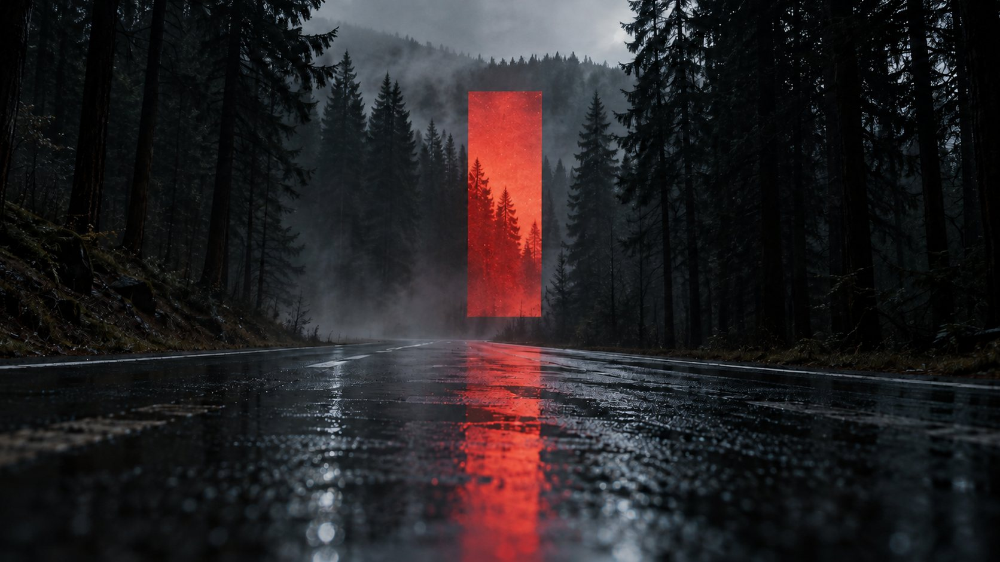

An idea changes as it moves between an image and a story.
We work across creative direction, film, photography, writing, branding and digital strategy. The disciplines inform one another as a project takes shape, allowing us to follow the idea through the different forms it needs.

Red aperture
The idea decides what we bring to it.
Digital
Presence
Identity
Writing
Film & photo
Direction
The work can take a concentrated encounter or a longer conversation.
A particular project
We can work on a photograph, an identity, a piece of writing or a campaign with a defined purpose. We agree on the direction, scope and deliverables before beginning.
An ongoing creative relationship
Founder writing, creative direction, editorial and digital work can benefit from knowing the world more closely over time. We agree on responsibilities and how the work will be developed and reviewed.
Finding the direction
You may know the project needs to change before you know how. We can begin with the work as it is and shape a brief around what the conversation reveals.